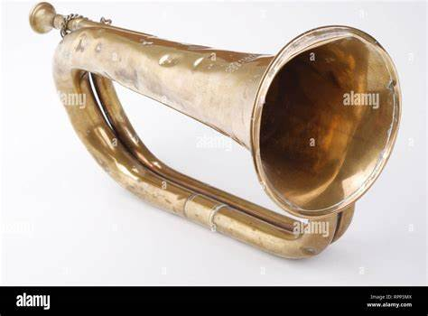

Ancient Trumpets

The earliest trumpets date back to 1500 BC and were used for communication and religious ceremonies.
Medieval Trumpets

Medieval trumpets were longer and used in royal and military settings.
Baroque Era

During the Baroque period, trumpets became more refined, with natural trumpets used in orchestras.
Modern Trumpets

Today’s trumpets feature valves, allowing greater range and versatility in music.